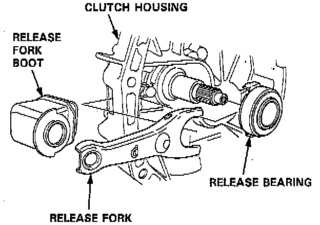
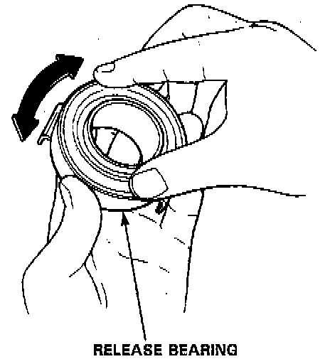
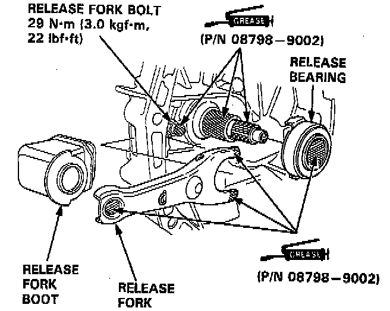
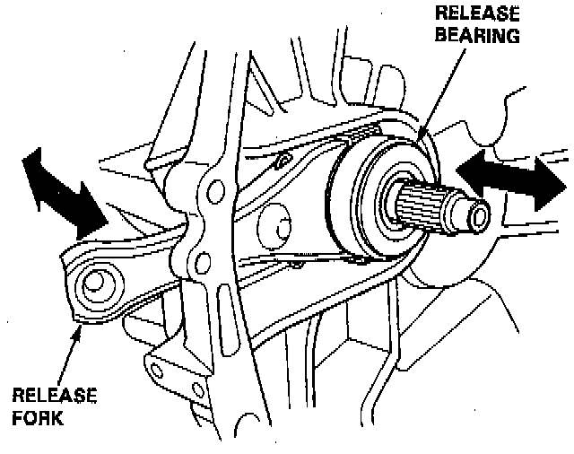

Clutch Release Bearing: Service and Repair
REMOVAL1. Remove the release fork boot from the clutch housing.

2. Remove the release fork from the clutch housing by squeezing the release fork set spring with pliers. Remove the release bearing.

3. Check the release bearing for play by spinning it by hand.
CAUTION: The release bearing is packed with grease. Do not wash it in solvent.
- If there is excessive play, replace the release bearing with a new one.
INSTALLATION
1. With the release fork slid between the release bearing pawls, install the release bearing on the mainshaft while inserting the release fork through the hole in the clutch housing.

2. Align the detent of the release fork with the release fork bolt, then press the release fork over the release fork bolt.
NOTE: Use only Super High Temp Urea Grease.

3. Move the release fork right and left to make sure that the fork fits properly against the release bearing, and that the release bearing slides smoothly.
4. Install the release fork boot.